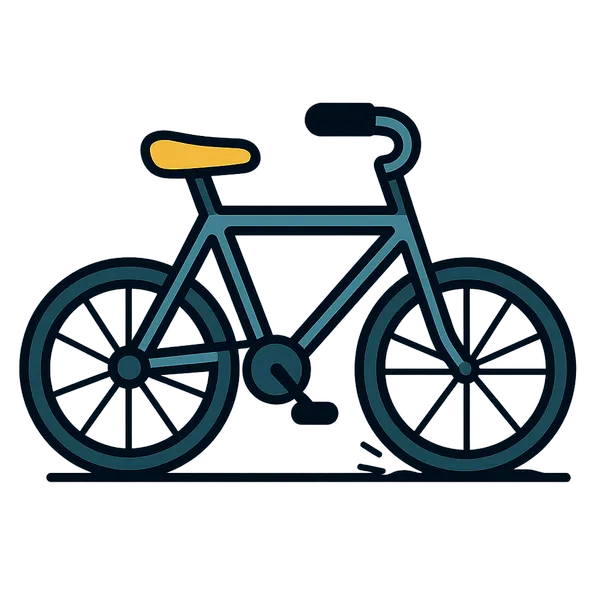
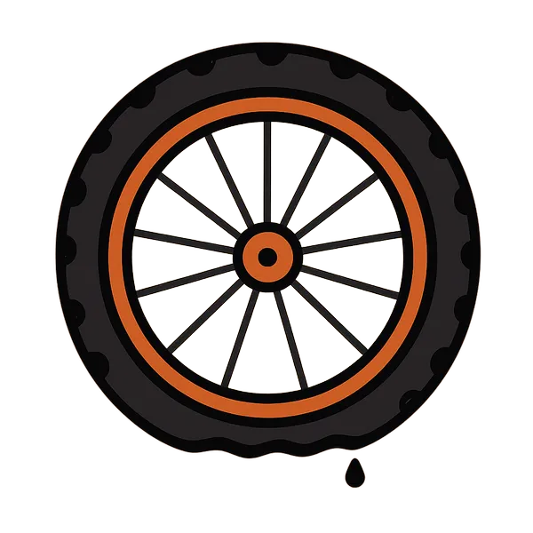
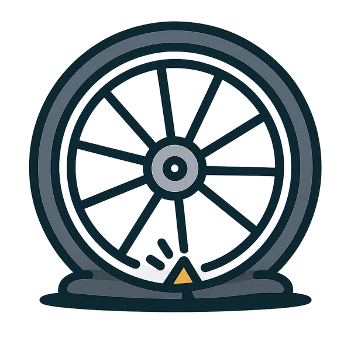
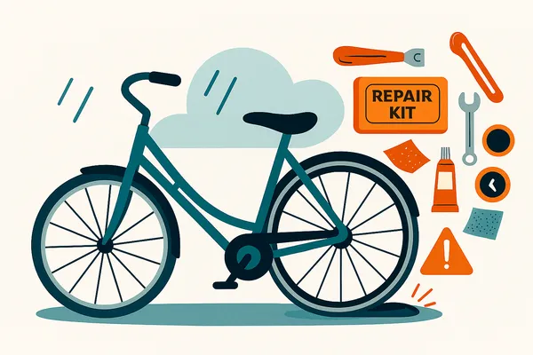
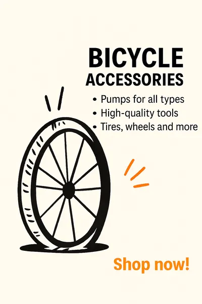

NYT DÆK?
FÅ HJÆLP TIL AT BLIVE GODT KØRENDE IGEN.

Kontakt os her
Står du med en punkteret cykel og ved ikke hvordan du får det fikset? Udfyld formularen og lad os hjælpe dig tilbage på jernhesten!
Udfyld kontakt formularLæserbrev
En våd og punkteret morgen

En våd og punkteret morgen
Tirsdag morgen startede som enhver anden – med kaffe i hånden og cykelhjelmen spændt. Men da jeg trillede ud i regnvejret på vej mod studiet, mærkede jeg hurtigt, at noget var galt. Baghjulet føltes tungt, og da jeg kiggede ned, var det tydeligt: punktering. Midt på brostenene, med regnen silende ned, stod jeg og stirrede på et fladt dæk og en lang vej foran mig. Der var ingen cykelhandler i nærheden, og jeg havde ikke tid til at vente på hjælp. Så jeg gjorde det eneste mulige – jeg slæbte cyklen med mig. I regnjakke og våde sko traskede jeg gennem byen, mens vandet samlede sig i hælene og humøret sank. Det føltes som en evighed, og da jeg endelig nåede frem, var jeg både gennemblødt og forsinket. Det slog mig, hvor sårbar man er, når cyklen svigter – især i et land hvor vi er afhængige af den hver dag. Måske er det på tide, at vi får flere offentlige reparationsstationer eller bedre adgang til nødservice. For en punktering bør ikke ødelægge en hel dag.

Guide
Udstyr du skal bruge:
Sådan gør du:

Udstyr
Find dit udstyr her, så du nemt kan komme op på cyklen igen.